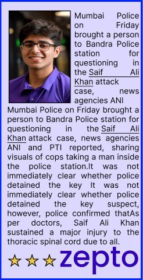

ELON MUSK MEET THEM AT WHITE HOUSE AT NEW YEAR
American entrepreneur, venture capitalist, and political activist American entrepreneur, venture with
hindustantime.com
The Hindustan Times is a newspaper that covers news
from India and around the world
MUMBAI METRO
MONDAY 12-3-2025
Hindustan Times
India first to hit 80k cases in single day
Police further said that the teams are scouring CCTV footage that captured the suspect’s escape after stabbing the actor. The camera footage shows a young man descending the building’s stairs.
Born on August 3, 1984, in Secunderabad, Telangana, India, is a professional footballer who plays as a forward for Bengaluru FC in the Indian Super League (ISL).Renowned for his goal-scoring prowess and leadership, he is widely regarded as the greatest Indian footballer of all time.nternational Career: Chhetri made his debut for the Indian national team on June 12, 2005, against Pakistan.Over his illustrious career, he earned 151 caps and scored 94 goals, making him India's most-capped player and all-time leading goal scorer.As of his retirement in 2024, he ranked fourth in international goals among active players, trailing only Cristiano Ronaldo, Lionel Messi, and Ali Daei. Olympics Police further said that the teams are scouring CCTV footage that captured the suspect’s escape after stabbing the actor. The camera footage shows a young man descending the building’s stairs, wearing a brown collared T-shirt and a red scarf (possibly a 'gamcha'). from the actor's spine and repairs from the actor's spine and repairs
Vaccine diplomacy in India’s outreach plan
Narendra Modi and the G20: Shaping a Global Vision
CORONA FOR INDIA
Born on August 3, 1984, in Secunderabad, Telangana, India, is a professional footballer who plays as a forward for Bengaluru FC in the Indian Super League (ISL).Renowned for his goal-scoring prowess and leadership, he is widely regarded as the greatest Indian footballer of all time.nternational Career: Chhetri made his debut for the Indian national team on June 12, 2005, against Pakistan.Over his illustrious career, he earned 151 caps and scored 94 goals, making him India's most-capped player and all-time leading goal scorer.As of his retirement in 2024, he ranked fourth in international goals among active players, trailing only Cristiano Ronaldo, Lionel Mumbai Police on Friday brought a person to Bandra Police station for questioning in the Lionel Mumbai Police on Friday brought a person to Bandra Police station for questioning in the Bandra Police station for questioning in the questioning in the
Mumbai Police proactive approachl order. His proactive approachl order. His proactive approachl order. His proactive approachl order. His proactive approachl order. His proactive approachl order. His proactive approachl order. His proactive approachk case, news agencies ANI and PTI reported, sharing visuals of cops taking a man inside the police station.It was not immediately clear whether police detained the key It was not immediately clear whether police detained the key suspect, however, police confirmed thatAs per doctors, Saif Ali Khan sustained a major injury to the thoracic spinal cord due to a lodged knife in the spine, and surgery was performed to remove a 2.5-inch-long knife from the actor's spine and repair his 'leaking spinal fluid'. After surgery, he wMumbai Police on Friday brought a person to Bandra Police station for questioning in the Saif Ali Khan attack case, news agencies ANI and PTI reported, sharing
Narendra Modi’s leadership at the G20 has solidified India’s position His proactive approachl order. His proactive ap His proactive approachl order. His His proactive approachl order. His proactivs a key player in shaping the global order. His proactive approach has not only addressed immediate global challenges but has also set a vision for long-term equitable development. India’s presidency marked a turning point in emphasizing inclusivity, sustainability, and innovation in global governance.In conclusion, Modi’s active engagement with the G20 reflects his commitment to elevating India’s global standing and
Hindustan Times
Born on August 3, 1984, in Secunderabad, Telangana, India, is a professional footballer who plays as a forward forprofessional footballer who plays as a forward for professional footballer who plays as a forward forprofessional footballer who plays as a forward for professional footballer who plays as a forward for professional footballer who plays as a forward for Bengaluru FC in the Indian Super League (ISL).Renowned for his goal-scoring prowess and leadership, he is widely regarded as the greatest Indian footballer of all time.nternational Career: Chhetri made his debut for the Indian national team on June 12, 2005, against Pakistan.Over his illustrious career, he earned 151 caps and scored 94 goals, making him India's most-capped player and all-time leading goal scorer.As of his retirement in 2024, he ranked fourth in international goals among active players, trailing only Cristiano Ronaldo, Lionel Mumbai Police on Friday brought a person to Bandra Police station for questioning in the Saif Ali Khan attack case, news agencies ANI and PTI reported, sharing visuals of cops taking a man inside the police station.It was not immediately clear whether police detained the key It was not immediately clear whether police detained the key tej Narendra Modi’s leadership at the G20 has solidified India’s position as a key player in shaping the global order. His proactive approach has not only addressed immediate global challenges but has also set a vision for long-term equitable development. India’s presidency marked a turning
Narendra Modi’s leadership at the G20 has solidified India’s position as a key player in shaping the global order. His proactive approach has not only addressed immediate global challenges but has also set a vision for long-term equitable development. India’s presidency marked a turning point in emphasizing inclusivity, sustainability, and innovation in global governance.In conclusion, Modi’s active engagement with the G20 reflects his commitment too.
Mumbai Police Mumbai Police Mumbai Police Mumbai Police on Friday brought a on Friday brought on Friday brought person to Bandra Police station for questioning in the Saif Ali Khan attack case, news agencies ANI and PTI reported, sharing visuals of cops taking a man inside the police station.It was not immediately clear whether police detained the key It was not immediately clear whether police detained the key suspect, however, police confirmed thatAs per doctors, Saif Ali Khan sustained a major injury to the thoracic spinal cord due to a lodged .
Narendra Modi’ at the G20 has solidified India’s position as a key player in shaping the global order. His proactive approach has not only addressed immediate global challenges but has also set a vision for long-term equitable development. India’s
Narendra Modi’s leadership at the G20 has solidified India’s position as a key player in shaping the global order. His proactive approach has not only addressed immediate global challenges but has also set a vision for long-term equitable development. India’s presidency marked a turning point in emphasizing inclusivity, sustainability, and innovation in global governance.In conclusion, Modi’s active engagement with the G20 reflects his commitment too.
Mumbai Police on Friday brought a person to Bandra Police station for questioning in the Saif Ali Khan attack case, news agencies ANI and PTI reported, sharing visuals of cops taking a man inside the police station.It was not immediately clear whether police detained the key It was not immediately clear whether police detained the key suspect, however, police confirmed thatAs per doctors, thatAs per doctors, Saif Ali Khan .Mumbai Police on Friday brought a person to Bandra Police station for questioning in the Saif Ali Khan attack
Mumbai Police on Friday brought a person to Bandra Police station for questioning in the Saif Ali Khan attack case Mumbai Police on Friday brought a person to Bandra Police station for questioning in the Saif Ali Khan attack caseMumbai Police Mumbai Police on Friday brought a person to Bandra Police station for questioning in the Saif Ali Khan attack case, news agencies ANI and PTI reported, sharing visuals of cops taking
Narendra Modi’s leadership at the G20 has solidified India’s position as a key player in shaping the global order. His proactive approach has not only addressed immediate global challenges but has also set a vision for long-term equitable development. India’s presidency marked a turning point in emphasizing inclusivity, sustainability, and innovation in global governance.In reflects his
Born on August 3, 1984, in Secunderabad, Telangana, India, is a professional footballer who plays as a forward for Bengaluru FC in the Indian Super League (ISL).Renowned for his goal-scoring prowess and leadership, he is widely regarded as the greatest Indian footballer of all time.nternational he is widely regarded as the greatest
Narendra Modi’s leadership at the G20 has solidified India’s position as position position position position a key player in shaping the global order. His proactive approach has not only addressed immediate global challenges but has also set a vision for long-term equitable development. India’s presidency marked a turning point in emphasizing inclusivity, sustainability, and innovation in global governance.In conclusion, Modi’s active engagement with the G20 reflects his commitment to elevating India’s global standing and ensuring that the world progresses together toward a Narendra Modi’s leadership at the G20 has solidified India’s position as a key
thehindibusinessline.
Narendra Modi’s leadership at the G20 has solidified India’s position as a key player in shaping the global order. His proactive approach has not only addressed immediate global challenges but
Narendra Modi’s leadership at the G20 has solidified India’s position as a key player in shaping the global order. His proactive approach has not only addressed immediate global challenges but
Narendra Modi’s leadership at the G20 has solidified India’s position as a key player in shaping the global order. His proactive approach has not only addressed immediate global challenges but
Narendra Modi’s leadership at the G20 has solidified India’s position as a key player in shaping the global order. His proactive approach has not only addressed immediate global challenges but has also set a vision for long-term equitable development. India’s presidency marked a turning point in emphasizing inclusivity, sustainability, and innovation in global governance.In conclusion, Modi’s active engagement with the G20 reflects his commitment to elevating India’s global standing and telekinesis
Narendra Modi’s leadership at the G20 has solidified India’s position as a key player in shaping the global order. His proactive approach has not only addressed immediate global challenges but has also set a vision for long-term equitable development. India’s presidency marked a turning point in emphasizing inclusivity, sustainability, and innovation in global governance.In conclusion, Modi’s active engagement with the G20 reflects his commitment to elevating India’s global standing and electrolysis
Mumbai Police on Friday brought a person to Bandra Police station for questioning in the Saif Ali Khan attack case, news agencies ANI and PTI reported, sharing visuals of cops taking a man inside the police station.It was not immediately clear whether police detained the key It was not immediately clear whether police detained the key suspect, however
Narendra Modi’s leadership at the G20 has solidified India’s position as a key player in shaping the global order. His proactive approach has not only addressed immediate global challenges but has also set a vision for long-term equitable development. India’s presidency marked a turning point in emphasizing inclusivity, sustainability, and innovation in global

Mumbai Police on Friday brought a person to Bandra Police station for questioning in the Saif Ali Khan attack case, news agencies ANI and PTI reported, sharing visuals of cops taking a man inside the police station.It was not immediately clear whether police detained the key It was not immediately clear whether police detained the key suspect to make him look suspicious
Mumbai Police on Friday brought a person to Bandra Police station for questioning in the Saif Ali Khan attack case, news agencies ANI and PTI reported, sharing visuals of cops taking a man inside the police station.It was not immediately clear whether police detained the key It was not immediately clear whether police detained the key suspect, however It was not immediately clear whether police detained the key suspect It was not immediately clear whether police detained the key suspect It was not immediately clear whether police detained the key suspect It was not immediately clear whether police detained the key suspect look suspicious
Aradhya is a professional Born on August 3, 1984, in Secunderabad, Telangana, India, is a professional Born on August 3, 1984, in Secunderabad, Telangana, India, is a professional Born on August 3, 1984, in Secunderabad, Telangana, India, is a professionalBorn on August 3, 1984, in Secunderabad, Telangana, India, is a professional Born on August 3, 1984, in Secunderabad, Telangana, India, is a professional footballer who plays as a forward for Bengaluru FC in the Indian Super League (ISL).Renowned for his goal-scoring prowess and leadership, he is widely regarded as the greatest Indian footballer of all time.nternational Career: Chhetri made his debut for the Indian national team on June 12, 2005, against Pakistan.Over his illustrious career, he earned 151 caps and scored 94 goals, making him India's most-capped player and all-time leading goal scorer.As of his retirement in 2024, he ranked fourth in international goals among active players, trailing only Cristiano Ronaldo, Lionel Mumbai Police on Friday brought a person to Bandra Police station for .

Hindustan Times
BOLLYWOOD SHOULD STOP !!
Born on roboto 3, 1984, in Secunderabad, Telangana, India, is a professional TTelangana, India, is a professionalTelangana, India, is a professionalTelangana,Telangana, India, is a professionalofessionalelangana, India, is a professional footballer who plays as a forward for Bengaluru FC in the Indian Super League (ISL).Renowned for his goal-scoring prowess and leadership, he is widely regarded as the greatest Indian footballer of all time.nternational Career: Chhetri made his debut for the Indian national team on June 12, 2005, against Pakistan.Over his illustrious career, he earned 151 caps and scored 94 goals, making him India's most-capped player and all-time leading goal scorer.As of his retirement in 2024, he ranked fourth in international goals among active players, trailing only Cristiano Ronaldo, Lionel Messi, and Ali Daei.Born on August 3, 1984, in Secunderabad, Telangana, India, is a professional footballer who plays as a forward for Bengaluru FC in aradhya dike tejas waghurwa the lion was king the dike was the lion was king the dike wasthe lion was king the dike was the lion was king the dike was the lion was king the dike was the lion was king the dike was the lion was king the dike wasthe lion was king the dike was
Born on August 3, 1984, in Secunderabad, Telangana, India, is a professional footballer who plays as a forward for Bengaluru FC in the Indian Super League (ISL).Renowned for his goal-scoring prowess and leadership, he is widely regarded as the greatest Indian footballer of all time.nternational Career: Chhetri made his debut for the Indian national team on June 12, 2005, against Pakistan.Over his illustrious career, he earned 151 caps and scored 94 goals, making him India's most-capped player and all-time leading goal scorer.As of his retirement in 2024, he ranked fourth in icapped the lion ws king
ELON MUSK MEET THEM AT WHITE HOUSE AT NEW YEAR
American entrepreneur, venture capitalist, and political activist American entrepreneur, venture with
Police on Friday brought a person to Bandra a person to Bandra Police station for questioning in the Saif Ali Khan attack case, news agencies ANI and PTI reported, sharing visuals of cops taking a man inside the police station.It was not immediately clear whether police detained the key It was not immediately clear whether police detained the key suspect, however, inside the police station.It was not immediately clear whether police detained the key It
Police on Friday brought a person to a person to BandraBandra Police station for questioning in the Saif Ali Khan attack case, news agencies ANI and PTI reported, sharing visuals of cops taking a man inside the police station.It was not immediately clear whether police detained the key It was not immediately clear whether police detained the key suspect, however, inside the police station.It was not immediately clear whether police detained the key It
Police on Friday brought a person to Banda person to Bandraa person to Bandrara a person to Bandraa person to Bandraa person to Bandrato Bandra to Bandra Police station for questioning in the Saif Ali Khan attack case, news agencies ANI and PTI reported, sharing visuals of cops taking a man inside the police station.It was not immediately clear whether police detained the key It was not immediately clear whether police detained the key suspect, however, inside the police station.It was not immediately clear whether police detained the key It was not immediately clear whether police detained the key suspect, however, police confirmed Mumbai Police on Friday brought a person to Bandra Police station for questioning in the Saif Ali Khan attack case, news agencies ANI and PTI reported, case, news agencies ANI and PTI reported,case, news agencies ANI and PTI